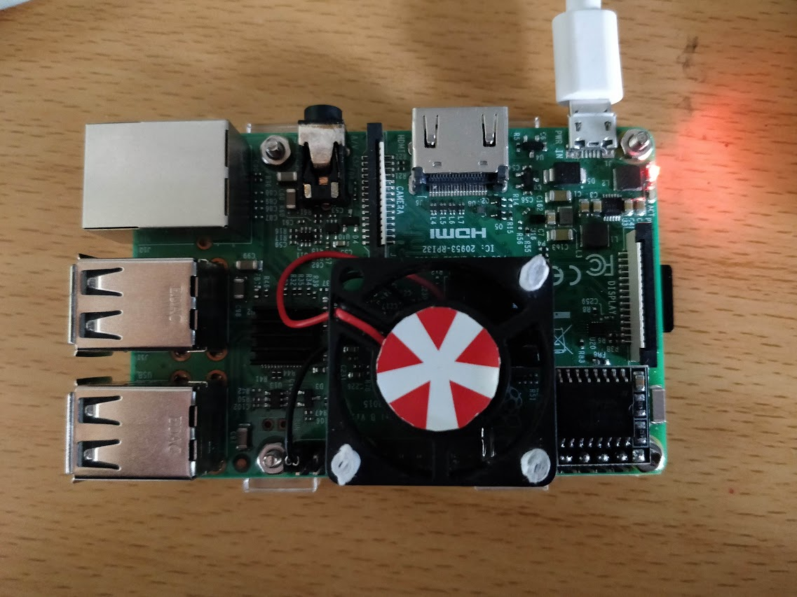
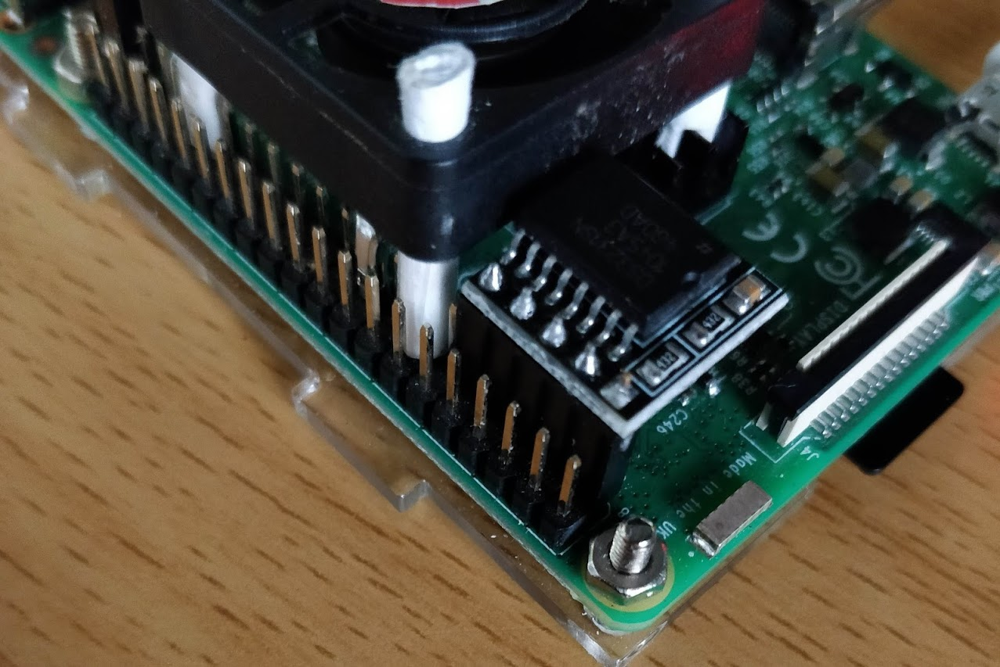
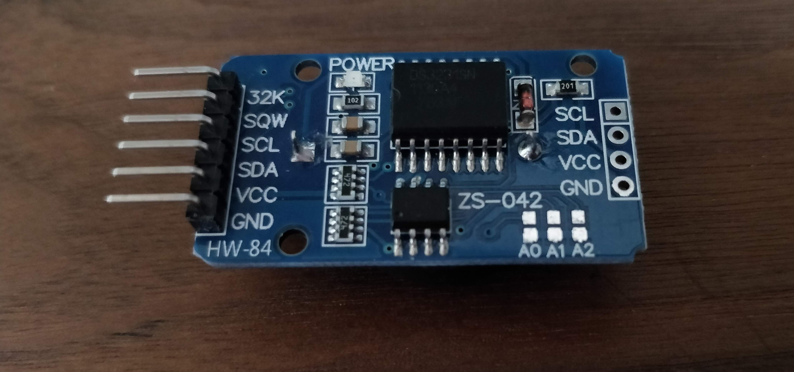

Install CentOS to Raspberry Pi 3 Model B

Before you start
- This file is based on
- Windows 10
- Your own WiFi
- An Ethernet cable
- Why CentOS? Because on April 3rd 2019 Jack encountered a bizarre bug on Raspbian. After installing php 7.2, he rebooted it and he could never connect it via ssh by neither WiFI nor Ethenet cable…
- Damn it!
- And the Official wiki is here
1. Download the image
- Find the edition you want here.
- Download it and use 7z to deal with it. Just rename the .raw to .img, it works! Now write it into SD card via Image Writer.
- Before inserting it into Pi, create an empty file named ssh and paste it into boot partition to enable ssh connection. Just ssh, no file extension affix.
2. Boot it, connect it, and expand it
- Find an Ethernet cable and connect the pi to PC.
- Enable network sharing in Settings.
- Open some cmd software and type
arp -a. - Find the IP address corresponding to Pi’s MAC.
- Start a ssh session, use
root@xxx.xxx.xxx.xxxand the password iscentos. less README, follow its advice, so just typerootfs-expand. Very user-friendly, isn’t it?- By the way, it’s not a good idea to use root to log in, so I suggest reading this file to add another user that has sudo privilege.
3. Welcome to 1969, WiFi
- It seems that the newest version of ARM CentOS has resolved WiFi firmware distribution dilemma, so just type
systemctl start network.serviceand, hola, WiFi is now enabled. - Type
nmcli dand wlan0 is here. - Now type
nmtuiand chooseActivate a connection, it’s very easy to join the WiFi. - After connecting to WiFi, type
sudo yum update -yto update the system. - Type
timedatectl list-timezones | grep Asiato check the time zone, then, for example, typesudo timedatectl set-timezone Asia/Shanghaito set the proper time zone for your area.
4. Add a Real Time Clock to Raspberry Pi
DS3231 is a good choice:

Or you could choose this kind of DS3231:

And connect
VCCto3V3(Power),GNDtoGround,SDAtoGPIO2(SDA1 I2C)SCLtoGPIO3(SCL1 I2C)

Connect Pi via ssh, enter sudo yum install i2c-tools -y to install i2c-tools. Then enter sudo vim /boot/config.txt, add these two lines to enable i2c
1 | dtoverlay=i2c-rtc, ds3231 |
Enter lsmod | grep i2c, and the output should be like this:
1 | i2c_bcm2835 16384 0 |
Use sudo vim /etc/modules-load.d/i2c.conf to append the following lines to the i2c.conf:
1 | i2c-dev |
now use sudo reboot to reboot the Pi.
Access it again via ssh or some other tools, type sudo i2cdetect -y 1, the output should be like this:
1 | 0 1 2 3 4 5 6 7 8 9 a b c d e f |
It works! Let’s set the system time, for example:
1 | sudo date -s 2019-4-10 |
then type sudo hwclock -w to write system time and date into DS3231.
Next, enter sudo vim /etc/rc.local to add time sync to startup tasks, add
1 | echo ds3231 0x68 > /sys/class/i2c-adapter/new_device |
At last, run sudo chmod +x /etc/rc.d/rc.local to ensure the script will be executed during boot as it suggests. Now reboot and give date a try.
5. A little server
If you browse the package list of CentOS-altarch-armhfp, and there is no php 7 available. But I found a solution here
1 | cat > /etc/yum.repos.d/epel.repo << EOF |
then
1 | cat > /etc/yum.repos.d/php72-testing.repo << EOF |
finally
1 | cat > /etc/yum.repos.d/remi.repo << EOF |
Hola! The rest is easy.